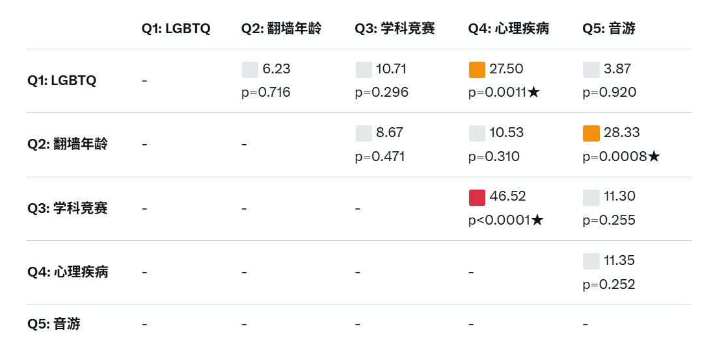
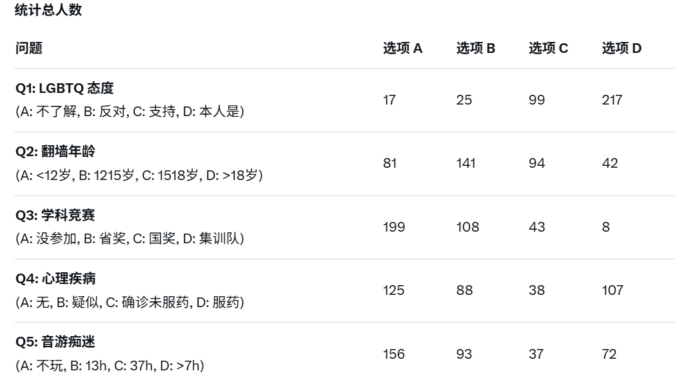
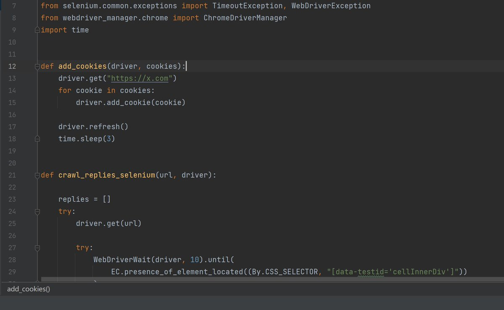

神楽坂 雪風🏳️⚧️🍥
@Kagura_Yukikaze
RT @yinsuecci: “相关性卡方检验”
截止到10.18.12:00，共收取有效数据353条。
其中，有显著关联的是
1.学科竞赛&心理疾病
2.音游&翻墙年龄
3.LGBTQ&心理疾病
受限于x用户群体的特殊性，无法得出更有效的数据，但也显露出了普遍性的问…



櫻序曦葉
@yinsuecci
“相关性卡方检验”
截止到10.18.12:00，共收取有效数据353条。
其中，有显著关联的是
1.学科竞赛&心理疾病
2.音游&翻墙年龄
3.LGBTQ&心理疾病
受限于x用户群体的特殊性，无法得出更有效的数据，但也显露出了普遍性的问题：
学科竞赛选手和LGBTQ更易出现心理疾病
（数据源于celenium爬虫） https://t.co/3zLXXgVBOg https://t.co/e2pJYa0xoZ